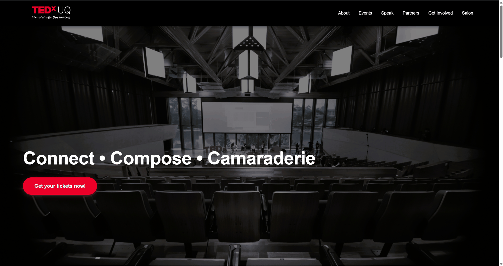
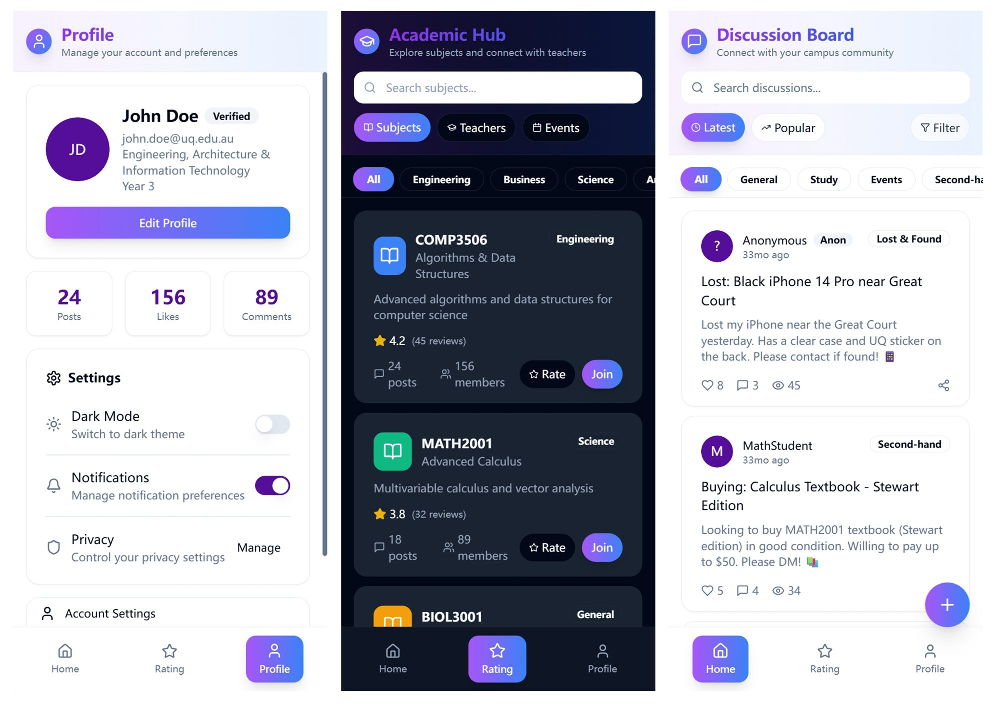
UQ Waves
为 UQ 学生设计的移动端校园社区应用：浏览和搜索讨论帖、给课程和老师打分、管理个人资料，并支持浅色和深色模式。
ReactTypeScriptViteTailwind CSSZustand
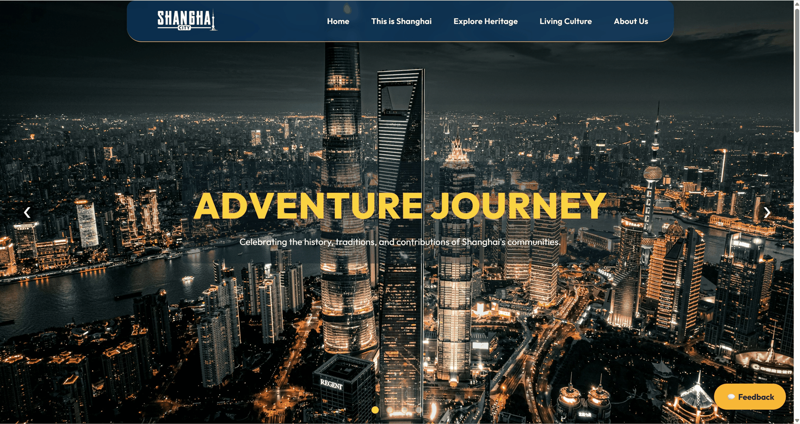
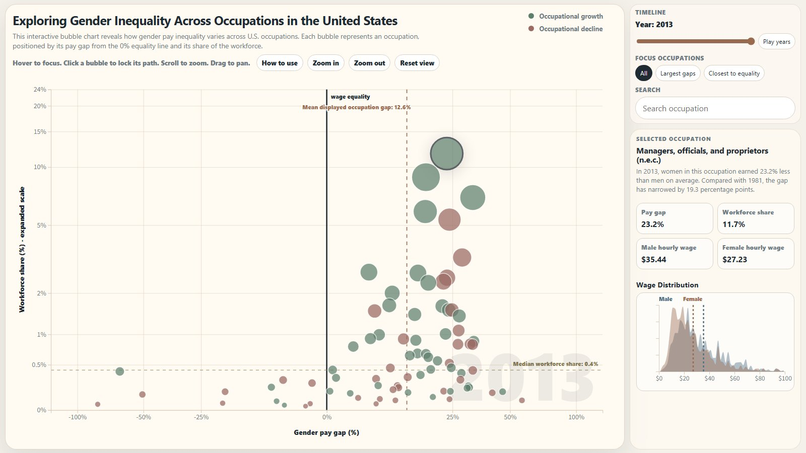
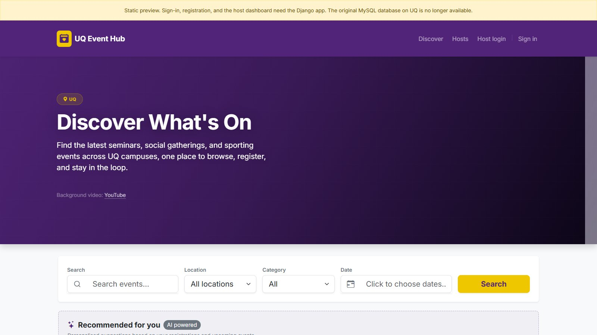
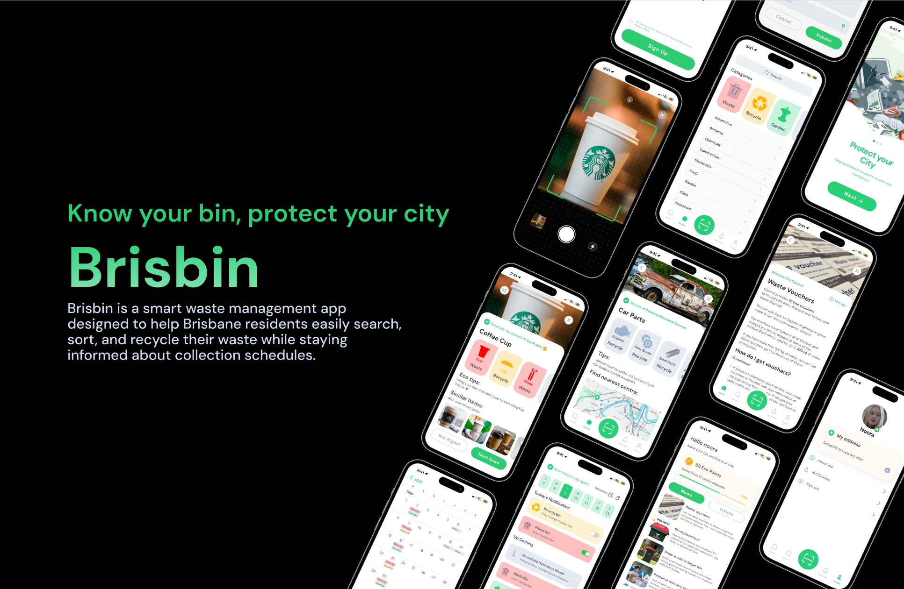
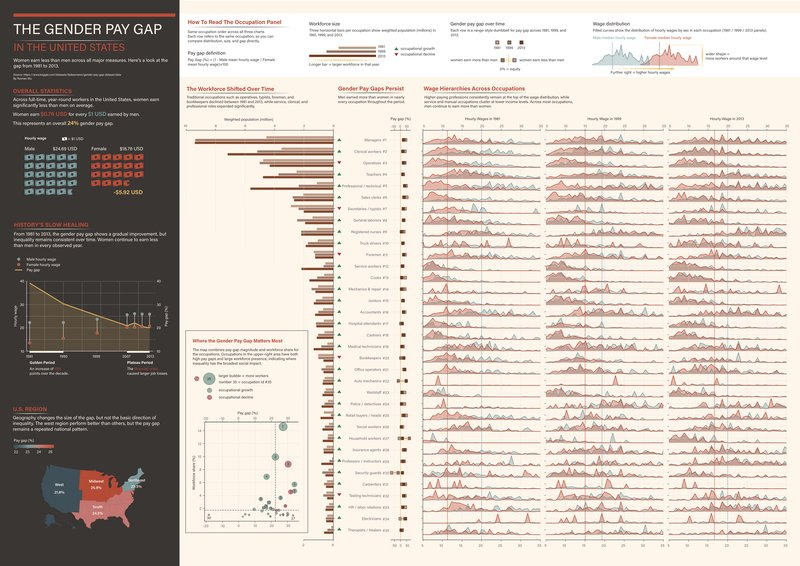
The Gender Pay Gap in the United States
DECO7220 课程作品：A2 横版数据可视化海报，用 Kaggle 的美国性别薪酬差距数据（1981–2013），讲述薪酬差距的整体情况、历史变化、地区差异和职业分布。
Adobe Illustrator数据可视化海报设计A2
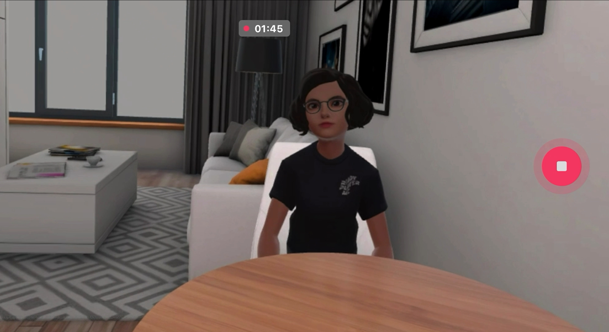
进行中
Automated Acquisition of Fruit Tree Growth Data
暑期研究项目：开发一套自动化监测系统，在田间持续采集果树的图像与环境数据，为果树生长分析和建模提供高频、一致的数据。
Summer ResearchAgricultureImage Data
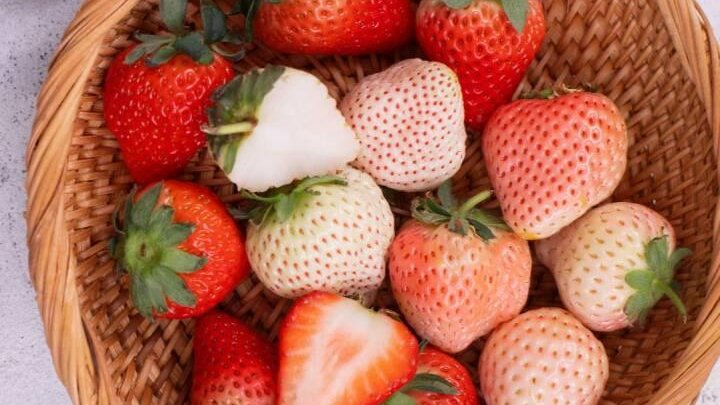
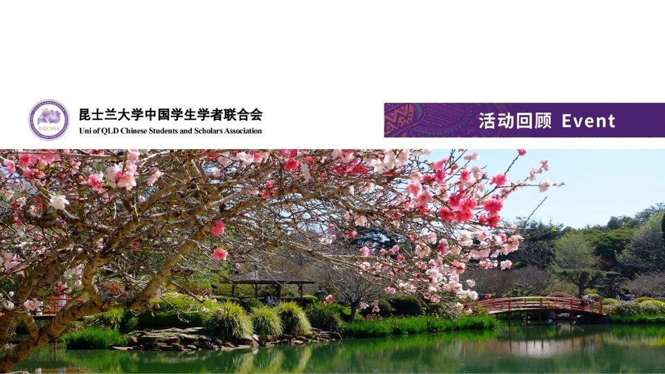
UQCSSA 微信公众号
2026 年 7 月起任 UQCSSA 社媒部部长，参与公众号内容。代表推文：《活动回顾｜UQCSSA周末一日游计划：卡拜伦湾 & 图文巴鲜花节》。
微信公众号UQCSSA社媒部
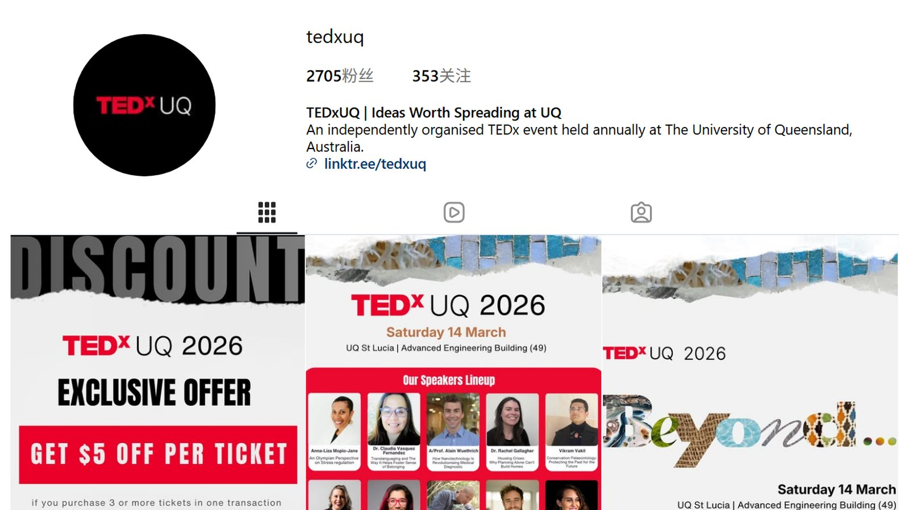
TEDxUQ Instagram
2026 年 3 月加入 TEDxUQ 市场团队，参与 TEDxUQ Instagram 账号 @tedxuq 的内容工作。
InstagramTEDxUQMarketing
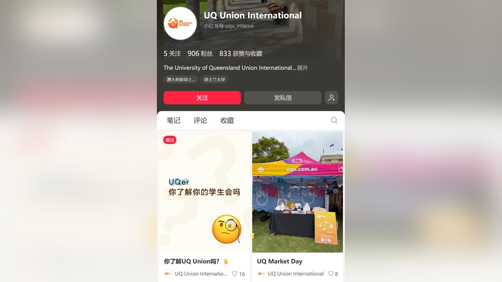
UQ Union International 小红书
2025 年 7 月加入 UQ Union 国际学生部，参与小红书「UQ Union International」的内容（833 次赞与收藏）；旧账号为「UQ学生会」。
小红书UQ Union国际学生
整理中，敬请期待
这个分类的作品正在整理，很快就会放上来。